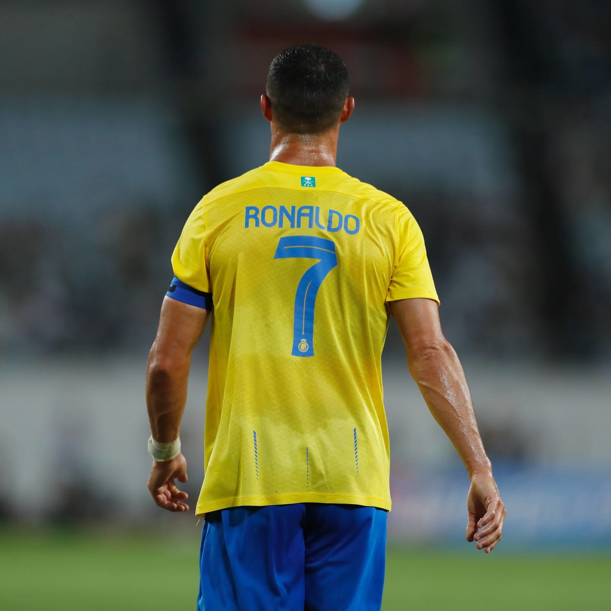

Ronaldo grew up in an impoverished Roman Catholic home, sharing a room with all his siblings.
As a child, Ronaldo played for Andorinha from 1992 to 1995, where his father was the kit man,
and later spent two years with Nacional.
Cristiano had trouble controlling his temper and was expelled from school for throwing a chair
at a teacher. He assumed he'd become a village fisherman and wasn't interested in academics.
Cristiano was obsessed with football, however, and quit school at age 14 to practice full time.
As of 2023, Forbes estimates his net worth at a cool $500 million, making him one of the wealthiest athletes in the world
o date, Ronaldo has five children, with three of the children born to two surrogate mothers.
His first son, Cristiano Ronaldo Jr, 11, was born on June 17, 2010, in the United States.
Cristiano Jr's family nickname is Cristianinho, which means "little Cristiano".
Cristiano Ronaldo has been speaking about his legendary rivalry with Lionel Messi and
the Portuguese superstar was getting nostalgic as he reflected on their careers
